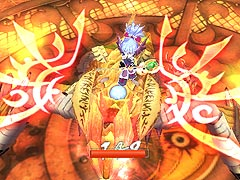

目次 > ゲームについて > 日本Falcom 攻略 > ZWEI II > 攻略チャート > アウロン大鉄塔ボス戦まで
らんの眼
ZWEI II (ツヴァイ 2、ZWEI II Plus)
| 概要 | 情報 | 攻略チャート |
| フード交換 | ペットについて | ボス戦 |
| 敵キャラ一覧 | ハンターランク | G-コロッセオ |
| アイテム一覧 | ガジェット一覧 | トレジャー一覧 |
| ダンジョン一覧 | クリアデータ特典 | Plusの追加要素 |
| ZWEI II攻略へ | 目次へ戻る |
| [ ～オルディウム神殿ボス ] [ ～アウロン大鉄塔ボス ] [ ～星降りの里 ] [ ～エンディング ] |
| 金闇の森ボス戦まで |
| 金闇の森へ 金闇の森でのイベント 「菜園林道(LV.7)」を突破 スバルとのイベント 「夜魔の森(LV.8)」を突破し、ルゥとのイベント アウロン大鉄塔へ 「基底区画(LV.9)」を突破 ピピロとポックルとのイベント 「凍結の魔法」を使い、「軌道連絡駅(LV.10)」へ続く扉を開ける 「軌道連絡駅」を突破し、奥で「Dパーツ」を入手 アルッテ飛行場のガシュレー親方にアンカーギアを改造してもらい、「バーニングギア」を入手 金闇の森の「夜魔の森(LV.8)」奥にある障壁をバーニングギアで破壊する 「魔女の家」へ行き、イベント モンブラン、エクスマキナとのイベント アビスフラワー戦 「疾風の魔法」を入手 魔女ラーライラとのイベント (おまけ) アルッテ飛行場でオデッサとのイベント セクンドゥム廃坑で妖精のイベント 星ヶ峰でピピロ、ポックルとのイベント クリスタルバレーでテルミドールとのイベント Gコロッセオで怪人ギャランドゥから渡された「チャーハン」を呼び込みペンギン渡すとアイテムをもらえる オルディウム神殿の「地下瞑想場(LV.7)」でギャランドゥから奥義を教えてもらえる |
| アウロン大鉄塔ボスまで |
| アウロン大鉄塔へ 「疾風の魔法」を使い、「灼天高炉(LV.11)」への道を開く 「灼天高炉」の奥でファブニール戦  「焦熱の魔法」を入手 テルミドールとのイベント (おまけ) 大熊猫楼でオデッサとのイベント アウロン大鉄塔で妖精とのイベント リフトを「疾風の魔法」で動かし、金闇の森の「金の沼地(LV.12)」へ行き、その奥で「Cパーツ」を入手でき、ガシュレー親方にアンカーギアを改造してもらうことでアンカーギアの隙が短くなる 金闇の森の「妖魔の里(LV.13)」の奥でギャランドゥに奥義を教わる |
| [ ～オルディウム神殿ボス ] [ ～アウロン大鉄塔ボス ] [ ～星降りの里 ] [ ～エンディング ] |
| 概要 | 情報 | 攻略チャート |
| フード交換 | ペットについて | ボス戦 |
| 敵キャラ一覧 | ハンターランク | G-コロッセオ |
| アイテム一覧 | ガジェット一覧 | トレジャー一覧 |
| ダンジョン一覧 | クリアデータ特典 | Plusの追加要素 |
| ページの上部へ | ZWEI II 攻略へ | 目次へ戻る |